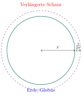

Aufgabe 7.2
Die Schnur wird um den ganzen Erdäquator gespannt und anschliessend wieder um 1 m verlängert. Was ist Ihre Erwartung, wie weit steht die Schnur jetzt ab?
- Stellen Sie die Umfangsformel für beide Kreise auf
- Berechnen Sie die Differenz der Radien
- Beachten Sie, dass der ursprüngliche Radius herausfällt
- Das Ergebnis ist unabhängig von der Grösse des Ausgangsobjekts
Das überraschende Ergebnis:
Intuitiv würden wir erwarten, dass der Abstand bei der riesigen Erdkugel verschwindend klein ist. Tatsächlich ist er aber genauso gross wie bei einem kleinen Globus!
Mathematische Analyse:
Sei $r$ der Radius eines beliebigen Kreises (Globus, Erde, etc.).
- Ursprünglicher Umfang: $U = 2\pi r$
- Verlängerter Umfang: $U' = U + 1$ m
Für den neuen Radius $r'$ gilt: $$r' = \frac{U'}{2\pi} = \frac{U + 1}{2\pi} = \frac{2\pi r + 1}{2\pi} = r + \frac{1}{2\pi}$$
Der Abstand zwischen alter und neuer Schnur beträgt: $$r' - r = \frac{1}{2\pi} \approx 0{,}159$$ m $\approx$ 15,9 cm

Erstaunliche Konsequenz:
- Der Abstand ist IMMER $\frac{1}{2\pi} \approx 15{,}9$ cm
- Völlig unabhängig vom Radius des ursprünglichen Kreises!
- Ob Murmel, Fussball, Globus oder Erdkugel - der Effekt ist identisch
Intuition vs. Mathematik: Unsere Intuition versagt hier, weil wir den winzigen relativen Zuwachs (bei der Erde: $\frac{1}{40.000.000}$) mit dem absoluten Abstand verwechseln.
Im Video: Etappe 1 · Die Kreiszahl π bei 9:11